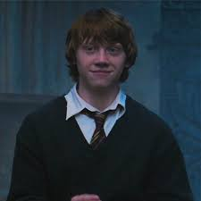
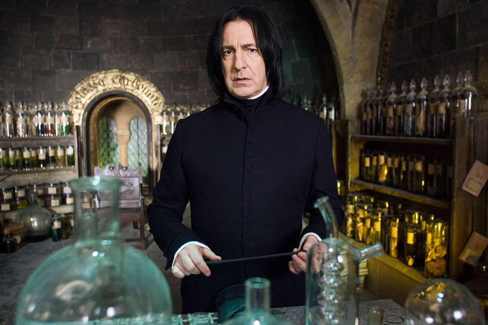
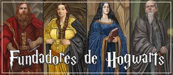
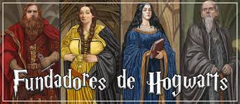

Harry Potter
Harry Potter es un joven mago famoso por sobrevivir a un ataque del malvado Lord Voldemort siendo solo un bebé. Junto a sus amigos Hermione Granger y Ron Weasley, Harry vive emocionantes aventuras en Hogwarts.

Hermione Granger
Hermione Granger es la bruja más brillante de su generación. Hija de muggles, destaca por su inteligencia, valentía y lealtad. Es una pieza clave en la lucha contra Voldemort.
Ron Weasley
Ron Weasley es el mejor amigo de Harry Potter y miembro de la familia Weasley, una familia de magos de sangre pura. Conocido por su gran sentido del humor y lealtad, Ron es un valiente aliado en la lucha contra las fuerzas oscuras.
Albus Dumbledore
Albus Dumbledore es el director de Hogwarts y uno de los magos más poderosos y sabios de la historia. Mentor de Harry Potter, Dumbledore es una figura fundamental en la lucha contra Voldemort y sus seguidores.

Severus Snape
Severus Snape es el enigmático profesor de Pociones de Hogwarts, conocido por su comportamiento severo y misterioso. A lo largo de la serie, Snape demuestra ser un personaje complejo con un papel crucial en la historia de Harry.
Casas de Hogwarts

Gryffindor
Valentía, audacia y coraje son las cualidades que definen a esta casa. Fundada por Godric Gryffindor, es conocida por tener algunos de los magos más valientes.
Slytherin
Ambición, astucia y determinación son características de los estudiantes de Slytherin. Esta casa fue fundada por Salazar Slytherin y es conocida por su astucia y liderazgo.
Ravenclaw
Inteligencia, creatividad y sabiduría son los valores de la casa Ravenclaw. Fundada por Rowena Ravenclaw, es el hogar de los estudiantes más intelectuales y curiosos.
Hufflepuff
Lealtad, paciencia y trabajo duro son las señas de identidad de esta casa. Fundada por Helga Hufflepuff, es conocida por su inclusión y valores de justicia.
Colegio Hogwarts de Magia y Hechicería
Hogwarts es la escuela de magia más prestigiosa del mundo. Aquí, los jóvenes magos y brujas aprenden todo sobre hechizos, pociones y criaturas mágicas.

Galería de Imágenes
 
